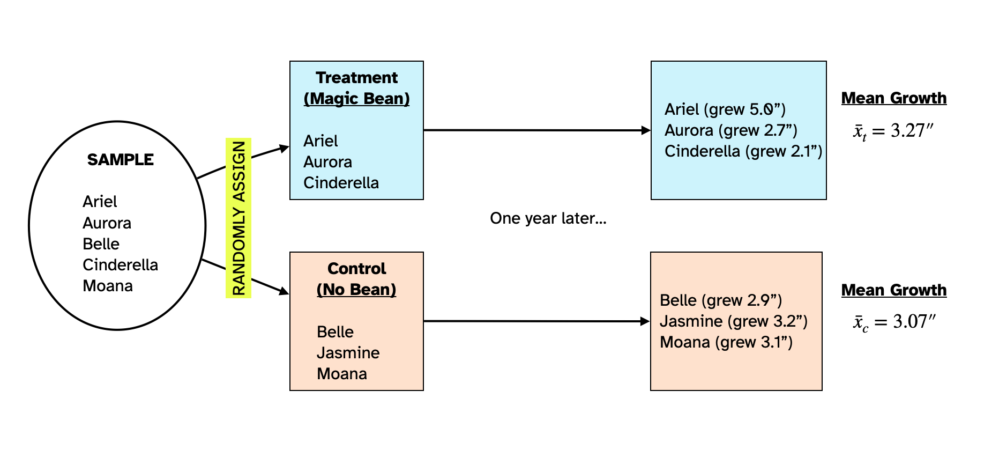
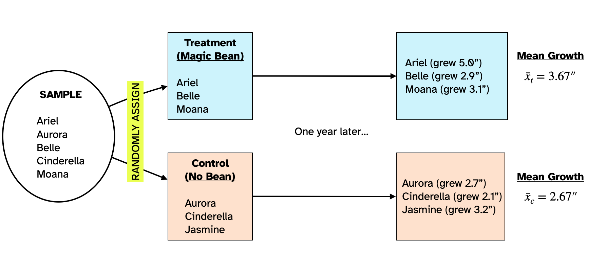
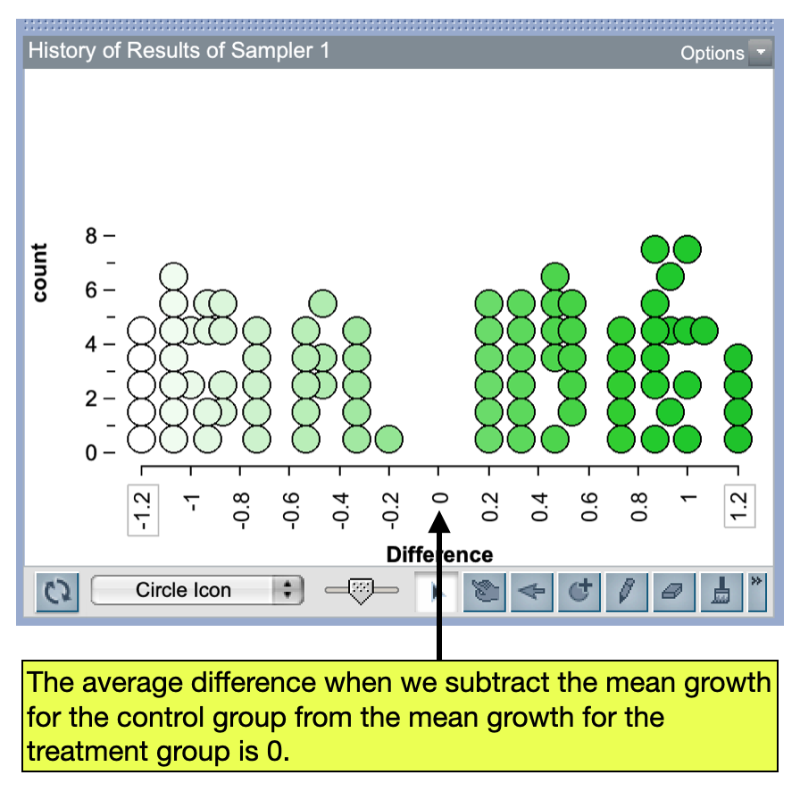

Experimental Variation
In group comparisons we are interested in comparing the summary measure for one group to the same summary measure in another group. When we do this, before we can draw any conclusions about whether one group’s summary measure is higher or lower than the other’s, we need to account for experimental variation. Experimental variation is the ides that in group comparisons, the summary measure for each group is impacted by which participants are assigned to which group. To help understand this, consider the following example:
Dr. Bunsen Honeydew wants to evaluate the effects of a magic bean that he hypothesizes will help people grow faster. He plans to evaluate this by carrying out a statistical experiment in which he will randomly assign six subjects he has recruited to two groups. The people in the first group will be given the magic bean (treatment group) and the people in the second group will not be given the magic bean (control group). After a year, he will measure the heights of people in both groups and compare their means to evaluate whether the magic bean impacted the treatment group’s heights.
Figure 1 shows the random assignment of the six people in the sample to the treatment and control groups and the results of Dr. Honeydew’s study. The people in the treatment group grew on average 3.70 inches over the course of the year and those in the control group grew on average 2.63 inches over the course of the year.
The people in the treatment group who consumed the magic bean grew 1.07 inches more than the people in the control group did. However, this is not enough evidence to conclude that the magic bean is effective. To see why this is the case, we have to understand how statisticians think about the effects of treatments.
Treatments and Effects
Let’s consider a person in the treatment group, say Ariel. Their growth after one year was 5.0 inches. If the magic bean is effective, then part of Ariel’s growth is due to eating the magic bean, and part is just growth that would have occurred anyway (even if Ariel didn’t eat the magic bean). Mathmatically, we could write Ariel’s growth as:
\[ 5.0 = T + e \]
where T is the growth attributed to the treatment (in this case, the magic bean) and e is the growth that would have occurred anyway without the bean. We could write such an equation for everyoe in the tretament group.
\[ \begin{split} \text{Ariel:}~~~5.0 &= T + e_{\mathrm{Ariel}}\\ \text{Belle:}~~~2.9 &= T + e_{\mathrm{Belle}}\\ \text{Jasmine:}~~~3.2 &= T + e_{\mathrm{Jasmine}}\\ \end{split} \]
Here we add a subscript to the e value just to indicate that the amount of growth that naturally occurs over the course of the year can be different for each person in the treatment group.1
We can also write a similar equation for everyone in the control group. The difference is that nobody in the control group ate the magic bean, so it couldn’t have impacted their growth. Mathematically, that implies that \(T=0\) for those equations. As an example, take Aurora’s growth, which was 2.7 inches:
\[ \begin{split} 2.7 &= T + e_{\mathrm{Aurora}}\\ 2.7 &= 0 + e_{\mathrm{Aurora}}\\ 2.7 &= e_{\mathrm{Aurora}} \end{split} \]
We can write this equation for everyone in the control group:
\[ \begin{split} \text{Aurora:}~~~2.7 &= e_{\mathrm{Aurora}}\\ \text{Cinderella:}~~~2.1 &= e_{\mathrm{Cinderella}}\\ \text{Moana:}~~~3.1 &= e_{\mathrm{Moana}}\\ \end{split} \]
In this case all of growth for people in our control group is just a function of the growth that occurred over that year.
No Effect of Treatment
Now consider a scenario where the magic bean does not impact growth at all; that is the treatment has no effect on growth. In this scenario, \(T=0\) for not just those people in the control group, but also for everyone in the treatment group:
\[ \begin{split} \text{Ariel:}~~~5.0 &= e_{\mathrm{Ariel}}\\ \text{Belle:}~~~2.9 &= e_{\mathrm{Belle}}\\ \text{Jasmine:}~~~3.2 &= e_{\mathrm{Jasmine}}\\ \text{Aurora:}~~~2.7 &= e_{\mathrm{Aurora}}\\ \text{Cinderella:}~~~2.1 &= e_{\mathrm{Cinderella}}\\ \text{Moana:}~~~3.1 &= e_{\mathrm{Moana}}\\ \end{split} \]
If there is no effect of treatment, everyone’s growth is just what naturally occurs over the course of a year. Another way to think about this is that regardless of what group people were assigned to at the beginning of the study, their growth would have been exactly the same as what it was. For example, had Moana been randomlly assigned to the treatment group and eaten the magic bean, her growth still would have been 3.1 inches since the bean has no effect on growth. Similarly, Ariel’s growth would have been 5.0 inches, even if she had been assigned to the control group!
Variation in Groups due to Random Assignment
Let’s continue assuming there is no effect of treatment. But now, let’s go back to the point in the study where Dr. Honeydew carried out the random assignment. What if the random assignment had come out differently? There are, after all, many other ways the six people could have been randomly assigned to two groups.
Figure 2 shows another possible random assignment of the six people in the sample to two groups. In this random assignment the mean growth for the people in the treatment group was 3.27 inches and that for the control group was 3.07 inches. Remember that there is no effect of the magic bean, so the difference we are seeing in the two means ( a difference of 0.20 inches in favor of the treatment group) is just a function of who was assigned to the treatment group and who was assigned to the control group.

Figure 3 shows yet another possible random assignment of the six people in the sample to two groups. In this random assignment the mean growth for the people in the treatment group was 3.67 inches and that for the control group was 2.67 inches. Again, since there is no effect of the magic bean, the difference we are seeing in the two means (a difference of 1.00 inches in favor of the treatment group) is just a function of who was assigned to the treatment group and who was assigned to the control group.

The key thing to notice is that different random assignments produce different differences in the means. And, under the scenario that there is no effect of treatment, these differences are all a function of who was in the group…not because the treatment actually worked. This variation in the differences in our summary measures between the two groups (which is all just a fucntion of the random assignment and not related to the treatment at all) is what statisticians call experimental variation.
Experimental variation means that we cannot just look at the original results of Dr. Honeydew’s experiment and claim that the because the treatment group grew 1.07 inches more than the control group did, on average, that the magic beans worked. This difference might completely be due to experiemental variation. In order to evaluate whether the magic beans increased people’s height, we need to evaluate whether our difference of 1.07 inches is more than we expect because of experimental variation.
Collecting the Differences in Means
To evaluate the amount of experimental variation we expect if there is no impact of treatment, we could continue our process of:
- Randomly assign people to treatment and control groups;
- Compute the mean growth for both groups; and
- Find the difference in means by taking the control group mean and subtracting it from the treatment group mean.
We would repeat this many times. Figure 4 shows the plot of these differences in means for roughly 100 trials of this process. Similar to what we did in the previous unit, we can qauntify the experimental variation by computing the standard error of these differences and then finding the range of likely results.

Statistical Hypotheses for Comparing Groups
The two explanations we have for people’s growth constitute the statistical hypotheses, namely that (1) the treatment adds to peoples natural growth, or (2) it doesn’t. Writing these hypotheses:
\[ \begin{split} H_0:&~ \text{There is no effect of treatment (magic bean) on peoples’ growth.}\\ H_A:&~ \text{There is an effect of treatment (magic bean) on peoples’ growth.} \end{split} \]
PROTIP
The null hypothesis is always the “no effect of treatment” hypothesis
One really important thing to note about the differences in Figure 4 is that, on average, the difference between the mean treatment growth and the mean control growth is 0. This implies that if there is no effect of treatment, then on average, the difference between the means for the two groups is 0. So another way we can write the statistical hypothesis is in terms of this difference:
\[ \begin{split} H_0:~&\text{There is no difference in the average growth between people in the treatment}\\ &\text{group and those in the control group.}\\[1em] H_A:~&\text{There is a positive difference in the average growth between people in the}\\ &\text{treatment group and those in the control group.} \end{split} \]
Here, in the alternative hypothesis we say the difference will be positive since Dr. Honeydew’s research hypothesis was that the magic bean would add to people’s natural growth, which would imply that the mean growth for the people in the treatment group should be HIGHER than the mean growth fo the people in the control group. We could also use mathematical notation to write these hypotheses about the difference in means:
\[ \begin{split} H_0:&~ \mu_t - \mu_c = 0\\ H_A:&~ \mu_t - \mu_c > 0 \end{split} \]
Remember statistical hypotheses always use Greek letters! Here the Greek letter mu is what we use to indicate a mean.
Note that the T does not have a subscript. This implies that the impact of treatment on growth is exactly the same for everyone in the treatment group. This is a simplifying assumption that we use to make the problem easier; typically we think about this as the average impact of the treatment.↩︎